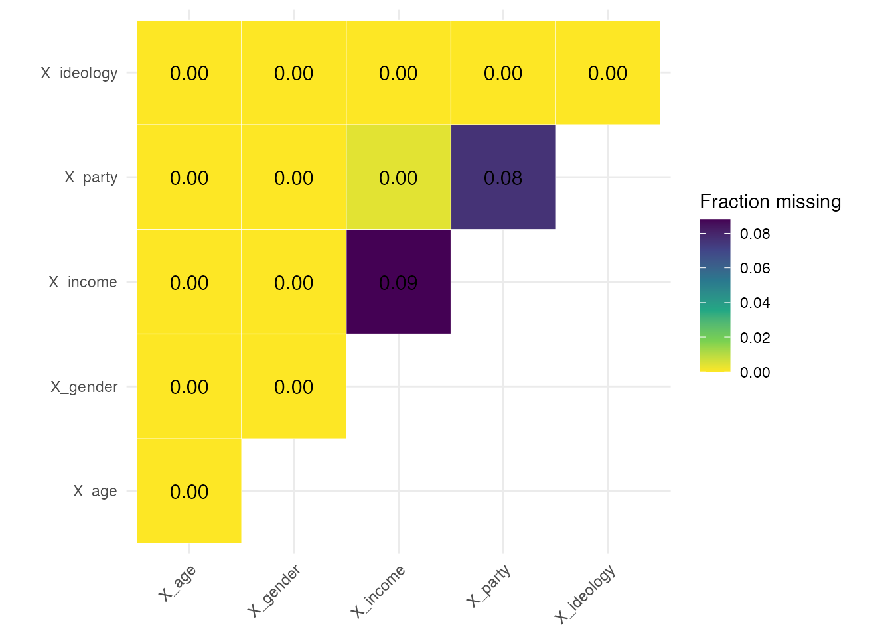

A cleaned experimental dataset invites four questions. Are the outcomes on the scale you think they are on? Which covariates have missing values, and what did you do about them? Did randomization balance the covariates? Did treatment affect who is missing an outcome? This vignette answers all four on a simulated study built with known problems, so that the checks have something to find.
Every check takes a study_id and appends it to its
output. That is what makes the results stackable across studies later,
which is the subject of
vignette("checking_many_studies").
A study with planted problems
Treatment is assigned at the cluster level, which matters later: a
clustered design changes which balance test is trustworthy.
X_income and X_party carry missing values, and
Y_attitude is missing more often among the treated, so the
attrition check should flag it and the balance checks should not.
set.seed(123)
n_clusters <- 25
cluster_size <- 20
n <- n_clusters * cluster_size
dat <- tibble(
cluster_id = rep(seq_len(n_clusters), each = cluster_size),
X_age = rnorm(n, 45, 15),
X_gender = sample(c("Male", "Female", "Other"), n, replace = TRUE,
prob = c(0.48, 0.48, 0.04)),
X_income = exp(rnorm(n, 11, 0.8)) * 1000,
X_party = factor(sample(c("Democrat", "Republican", "Independent"), n,
replace = TRUE, prob = c(0.35, 0.30, 0.35))),
X_ideology = sample(1:7, n, replace = TRUE)
) |>
mutate(
Z = cluster_ra(clusters = cluster_id),
# Covariates go missing at random, unrelated to treatment
X_income = if_else(runif(n) < 0.08, NA_real_, X_income),
X_party = if_else(runif(n) < 0.06, NA, X_party),
# Y_attitude drops out more often among the treated; Y_behavior does not
Y_attitude = if_else(runif(n) < if_else(Z == 1, 0.35, 0.25), NA_real_,
plogis(0.5 * Z + 0.01 * X_age + rnorm(n))),
Y_behavior = if_else(runif(n) < 0.20, NA_real_,
plogis(0.2 * Z + rnorm(n, 0, 0.5)))
)
dat
#> # A tibble: 500 × 9
#> cluster_id X_age X_gender X_income X_party X_ideology Z Y_attitude Y_behavior
#> <int> <dbl> <chr> <dbl> <fct> <int> <int> <dbl> <dbl>
#> 1 1 36.6 Female 204995675. Republican 2 0 0.711 0.315
#> 2 1 41.5 Male 54843105. Independent 3 0 NA 0.541
#> 3 1 68.4 Female 90145166. Republican 4 0 0.199 0.473
#> 4 1 46.1 Male 71051936. Democrat 2 0 NA NA
#> 5 1 46.9 Male 51591048. Independent 3 0 0.750 NA
#> 6 1 70.7 Female 54376369. Independent 2 0 0.828 NA
#> 7 1 51.9 Male 134627565. Independent 5 0 0.388 0.471
#> 8 1 26.0 Female 50961895. Republican 5 0 0.768 NA
#> 9 1 34.7 Female 11729403. Republican 5 0 0.260 0.464
#> 10 1 38.3 Female 51189443. Independent 4 0 NA 0.621
#> # ℹ 490 more rowsAre the outcomes on the expected scale?
check_y_bounds() reports the range of every
Y_ column and flags anything outside the unit interval.
Both outcomes here are probabilities, so both should pass.
check_y_bounds(dat, study_id = "demo_study_1")
#> # A tibble: 2 × 5
#> variable min max in_bounds study_id
#> <chr> <dbl> <dbl> <lgl> <chr>
#> 1 Y_attitude 0.0907 0.980 TRUE demo_study_1
#> 2 Y_behavior 0.195 0.813 TRUE demo_study_1A FALSE in in_bounds almost always means a
cleaning error rather than a finding: a percentage left on a 0 to 100
scale, or a reverse-coded item that never got recoded. Fix it at the
source.
Which covariates are missing, and were they imputed?
check_covariate_missingness() prints a summary and
returns a joint-missingness heatmap. The diagonal is each covariate’s
own missingness rate; an off-diagonal cell is the share of rows missing
both, so a cell close to its diagonal neighbours means the two go
missing together.
missingness <- check_covariate_missingness(dat)
#> # A tibble: 5 × 4
#> variable total_cases total_missing_cases fraction_missing_cases
#> <chr> <int> <int> <dbl>
#> 1 X_age 500 0 0
#> 2 X_gender 500 0 0
#> 3 X_income 500 44 0.088
#> 4 X_party 500 38 0.076
#> 5 X_ideology 500 0 0
write_covariate_imputation_code() does not impute
anything. It prints code for you to read and paste, so the imputation
lands in your script where a reader can see it rather than inside a
function call.
write_covariate_imputation_code(dat)
#> dat <-
#> dat |>
#> mutate(
#> X_age_nona = replace_na(X_age, median(X_age, na.rm = TRUE)),
#> X_age_missing = if_else(is.na(X_age), 1, 0),
#> X_gender_nona = replace_na(X_gender, stat_mode(X_gender)),
#> X_gender_missing = if_else(is.na(X_gender), 1, 0),
#> X_income_nona = replace_na(X_income, median(X_income, na.rm = TRUE)),
#> X_income_missing = if_else(is.na(X_income), 1, 0),
#> X_party_nona = replace_na(X_party, stat_mode(X_party)),
#> X_party_missing = if_else(is.na(X_party), 1, 0),
#> X_ideology_nona = replace_na(X_ideology, median(X_ideology, na.rm = TRUE)),
#> X_ideology_missing = if_else(is.na(X_ideology), 1, 0)
#> )Numeric covariates get the median, categorical ones the mode via
stat_mode(), and each gets a _missing
indicator alongside the imputed _nona version. Pasting that
output gives:
dat <-
dat |>
mutate(
X_age_nona = replace_na(X_age, median(X_age, na.rm = TRUE)),
X_age_missing = if_else(is.na(X_age), 1, 0),
X_gender_nona = replace_na(X_gender, stat_mode(X_gender)),
X_gender_missing = if_else(is.na(X_gender), 1, 0),
X_income_nona = replace_na(X_income, median(X_income, na.rm = TRUE)),
X_income_missing = if_else(is.na(X_income), 1, 0),
X_party_nona = replace_na(X_party, stat_mode(X_party)),
X_party_missing = if_else(is.na(X_party), 1, 0),
X_ideology_nona = replace_na(X_ideology, median(X_ideology, na.rm = TRUE)),
X_ideology_missing = if_else(is.na(X_ideology), 1, 0)
)check_missingness_nona() then confirms the imputation
took. has_nona_version says a companion column exists and
nona_has_na says whether it still contains missing values,
which it should not.
check_missingness_nona(dat, study_id = "demo_study_1")
#> # A tibble: 5 × 6
#> variable n_missing pct_missing has_nona_version nona_has_na study_id
#> <chr> <int> <dbl> <lgl> <lgl> <chr>
#> 1 X_age 0 0 TRUE FALSE demo_study_1
#> 2 X_gender 0 0 TRUE FALSE demo_study_1
#> 3 X_income 44 0.088 TRUE FALSE demo_study_1
#> 4 X_party 38 0.076 TRUE FALSE demo_study_1
#> 5 X_ideology 0 0 TRUE FALSE demo_study_1Did randomization balance the covariates?
check_balance() runs one test per covariate and one
joint test of all of them together. It returns a two-element list;
flatten = TRUE returns a single tibble instead,
distinguished by a test column.
Because assignment was clustered, clusters and
se_type are passed through to the underlying
lm_robust() call. This raises a warning, and the warning is
worth reading rather than suppressing.
balance <- check_balance(
dat, Z,
covariates = c("X_age_nona", "X_income_nona", "X_ideology_nona",
"X_gender", "X_party_nona"),
clusters = cluster_id,
se_type = "CR2",
study_id = "demo_study_1"
)
#> Warning in check_balance(dat, Z, covariates = c("X_age_nona", "X_income_nona", : check_balance: the
#> parametric joint test over-rejects under cluster randomization (about 13 percent at a nominal 5
#> percent with 30 clusters), and no degrees-of-freedom correction repairs it. Pass declaration = for
#> an exact randomization-inference p-value. The covariate-by-covariate tests are unaffected.
balance$covariate_tests
#> # A tibble: 7 × 9
#> covariate level F_stat statistic df1 df2 p_value nobs study_id
#> <chr> <chr> <dbl> <chr> <int> <int> <dbl> <int> <chr>
#> 1 X_age_nona NA 1.41 F 1 11 0.247 500 demo_study_1
#> 2 X_income_nona NA 3.68 F 1 11 0.0671 500 demo_study_1
#> 3 X_ideology_nona NA 0.000786 F 1 11 0.978 500 demo_study_1
#> 4 X_gender Male 0.439 F 1 11 0.514 500 demo_study_1
#> 5 X_gender Other 0.455 F 1 11 0.506 500 demo_study_1
#> 6 X_party_nona Independent 0.722 F 1 11 0.404 500 demo_study_1
#> 7 X_party_nona Republican 0.0120 F 1 11 0.914 500 demo_study_1F_stat is the omnibus statistic from regressing the
covariate on treatment and p_value is its p-value. There is
no coefficient column: with three or more arms there would be no single
coefficient to report, so the family reports the omnibus test
throughout. A factor covariate contributes one row per non-reference
level, which is why X_party_nona appears twice.
The joint test is the one the warning was about.
balance$joint_test
#> # A tibble: 1 × 11
#> F_stat statistic df1 df2 p_value p_value_classical nobs obs_per_param status estimable
#> <dbl> <chr> <int> <int> <dbl> <dbl> <int> <dbl> <chr> <lgl>
#> 1 1.81 F 7 22 0.131 0.419 500 17.9 tested TRUE
#> # ℹ 1 more variable: study_id <chr>Under cluster randomization that p-value is not trustworthy. The
parametric joint test rejects roughly 13 percent of the time at a
nominal 5 percent with 30 clusters, and no correction to its degrees of
freedom repairs it, because the cluster-robust variance estimator is
itself biased downward when treatment is constant within a cluster.
Passing a declaration replaces the parametric reference
distribution with the randomization distribution, which is
calibrated:
declaration <- declare_ra(clusters = dat$cluster_id)
check_balance(
dat, Z,
covariates = c("X_age_nona", "X_income_nona", "X_ideology_nona",
"X_gender", "X_party_nona"),
declaration = declaration,
sims = 200,
study_id = "demo_study_1"
)$joint_test
#> # A tibble: 1 × 11
#> F_stat statistic df1 df2 p_value p_value_classical nobs obs_per_param status estimable
#> <dbl> <chr> <int> <int> <dbl> <dbl> <int> <dbl> <chr> <lgl>
#> 1 7.21 LR NA NA 0.36 NA 500 NA tested TRUE
#> # ℹ 1 more variable: study_id <chr>The covariate-by-covariate tests need no such repair here. Treatment is binary, so each is a single-degree-of-freedom test, and those are well calibrated with cluster-robust standard errors. That is a fact about this design rather than about covariate tests in general: with many arms and a small sample they over-reject just as the joint test does.
vignette("balance_testing") works through the
calibration of all of these.
A p-value is not a magnitude
A significant imbalance in a large sample can be trivially small, and
a substantial one in a small sample can miss significance.
check_smd() answers the question the p-value cannot,
reporting each difference in units of the reference arm’s standard
deviation.
check_smd(dat, Z,
covariates = c("X_age_nona", "X_income_nona", "X_ideology_nona"),
study_id = "demo_study_1") |>
select(covariate, arm, reference, smd, flag)
#> # A tibble: 3 × 5
#> covariate arm reference smd flag
#> <chr> <chr> <chr> <dbl> <lgl>
#> 1 X_age_nona 1 0 0.0921 FALSE
#> 2 X_income_nona 1 0 0.198 TRUE
#> 3 X_ideology_nona 1 0 0.00213 FALSEflag marks an absolute SMD above 0.1, a conventional
threshold. Check the reference column rather than assuming
it: the default is the first level, which is a guess based on ordering,
and if your control arm is not first then every sign is inverted. Pass
reference explicitly when in doubt. If the balance tests
were weighted, pass the same weights column here too, since
an unweighted SMD beside a weighted p-value describes a different
sample.
Did treatment affect who is missing an outcome?
check_attrition() regresses a missingness indicator on
treatment for each outcome. Y_attitude was built with
differential attrition and Y_behavior was not.
check_attrition(dat, Z, clusters = cluster_id, se_type = "CR2",
study_id = "demo_study_1")
#> # A tibble: 2 × 10
#> outcome F_stat df1 df2 p_value nobs n_missing status estimable study_id
#> <chr> <dbl> <int> <int> <dbl> <int> <int> <chr> <lgl> <chr>
#> 1 Y_attitude 15.2 1 11 0.000675 500 155 tested TRUE demo_study_1
#> 2 Y_behavior 1.67 1 11 0.209 500 93 tested TRUE demo_study_1Y_attitude is flagged and Y_behavior is
not, which is what the simulation put there. This covariate-free test is
well calibrated under clustering, so unlike the joint balance test it
needs no randomization-inference counterpart.
The estimable column matters when these results are
stacked. An outcome nobody skipped supports no test at all, and such a
row reports NA rather than a p-value of 1. A collection of
studies contains many such outcomes, and counting them as p-values near
1 would make the p-value diagnostics in
vignette("checking_many_studies") report a badly
non-uniform distribution when nothing is wrong.
Passing covariates fits the Lin (2013) interacted model
instead, testing treatment and all treatment-by-covariate interactions
jointly. That asks a more demanding question, whether attrition differs
by treatment anywhere in covariate space, and it spends a
degree of freedom per covariate per arm to ask it. Read the two together
rather than replacing one with the other.
Is covariate missingness itself balanced?
Imputation assumes covariate missingness is unrelated to treatment.
Since the _missing indicators were created above, that
assumption is directly testable.
check_balance(
dat, Z,
covariates = c("X_income_missing", "X_party_missing"),
clusters = cluster_id,
se_type = "CR2",
study_id = "demo_study_1"
)$covariate_tests
#> # A tibble: 2 × 9
#> covariate level F_stat statistic df1 df2 p_value nobs study_id
#> <chr> <chr> <dbl> <chr> <int> <int> <dbl> <int> <chr>
#> 1 X_income_missing NA 1.16 F 1 11 0.292 500 demo_study_1
#> 2 X_party_missing NA 0.00754 F 1 11 0.932 500 demo_study_1Balance here supports the imputation. Imbalance would suggest missingness is related to treatment, which imputing a median cannot fix.
What to do with the results
Three of the four checks are about cleaning and one is about the
design. Out-of-bounds outcomes, covariates missing an imputed companion,
and companions that still contain NA are all errors to fix
at the source. Balance and attrition results are different: they are
evidence to report, not thresholds to act on.
-
A single flagged balance test is usually not worth
acting on. Under a valid design, roughly
alphaof these tests reject by construction. - Differential attrition is worth reporting as a limitation, and worth bounding or weighting if it is large.
- Imbalanced missingness indicators point at missingness that is not at random, where a sensitivity analysis is more honest than an imputation.
Dropping studies on the strength of a flagged check is how you
introduce the bias the check was meant to detect.
vignette("checking_many_studies") makes that case with the
arithmetic behind it, and shows how to run these checks across a corpus
and read the result.